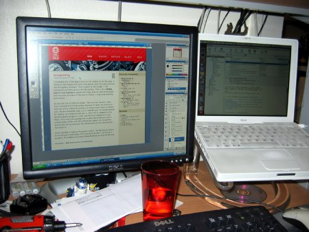

Work is continuing on the new design for the blog. I’ve moved on from thumbnailing
to making mockups in Photoshop. I had a few false starts, and
entertained a few odd ideas at first, but I soon got my focus back and
worked hard at producing the mockup based on the final thumbnail I
chose. Oddly, while my thumbnail was very helpful at getting sizes and
layout down, I hadn’t put much thought into uses of color, beyond that
I wanted to use more color than normal. In the end, my color choice was
dictated by the photo in my header graphic, and I’m planning on setting
it up so that I can easily slap up a new header graphic and adjust the
colors on the rest of the design to match, which would let me do
special designs or seasonal colors if I wanted to.
I also
found myself debating about what size to make the design. I spent quite
awhile looking at other blogs, evaluating whether or not I liked how
their design filled the browser window. What I discovered is that while
it’s quite trendy right now to design for 1024px screens and set the
design up to cut off gracefully on an 800px screen (or not), I don’t
think it’ll work for me. It’s great for guys like A List Apart,
who have an abundance of content that all needs to fit on the front
page, but my personal site doesn’t really need that. I would prefer
that the design follow function in this case, so I’m sticking to 750px
width. That’s actually a step up from the current design, but I’ve
already used this width on Sean’s blog, and I like the extra breathing room it gives, especially in the sidebar.
I’m pushing myself right now to finish the design in time to submit my site for round 3 of admissions to the 9rules network.
It will definitely be a big task to get everything done in time,
especially since this weekend Annie and I are watching our friends’
kids so they can go on a date. Wish me luck!